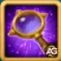

O evento Ilha Misteriosa retorna neste julho em Hero Wars: Dominion Era, oferecendo aos jogadores uma chance empolgante de navegar por um mapa em forma de labirinto cheio de recompensas ocultas, baús de Bandeira de Guerra e recursos poderosos. Seja você um explorador experiente ou esteja enfrentando a ilha pela primeira vez, este guia ajudará você a aproveitar ao máximo sua aventura.
Neste guia atualizado, você descobrirá as melhores rotas para alcançar as torres finais, dicas para maximizar suas recompensas e informações essenciais sobre como coletar toras de madeira para desbloquear pontes. De esmeraldas a baús de artefatos e tesouros sazonais, cada passo conta então planeje seus movimentos com sabedoria!
Mapa da Ilha Misteriosa 01 de Setembro de 2025.
Mapa da Ilha Misteriosa 01 de Setembro de 2025, um evento sazonal em Hero Wars: Dominion Era.
Mapa da Ilha Misteriosa 02 de Setembro de 2025.
Mapa da Ilha Misteriosa 02 de Setembro de 2025, um evento sazonal em Hero Wars: Dominion Era.
As Bandeiras de Guerra são itens poderosos na Dominion Era, e você pode obtê-las em baús especiais chamados Baús de Bandeira de Guerra. Existem quatro versões diferentes desses baús, e as bandeiras disponÁveis variam conforme a temporada do evento.
Baú de Bandeira de Guerra – Versão 1
Concede a escolha entre as seguintes bandeiras: DeclÁnio, Força dos Mascotes, Fervor ou o Fio Dourado.

Os Movimentos do Explorador Expiram Após o Fim de uma Aventura Sazonal?
Pode ficar tranquilo! Se você ainda tiver Movimentos do Explorador não utilizados quando a Aventura Sazonal atual terminar, você não os perderá. Esses movimentos restantes serão transferidos e estarão disponÁveis para uso na próxima Aventura Sazonal. É uma ótima forma de se manter à frente nos desafios futuros!
Você gostou do nosso Guia da Ilha Misteriosa para Hero Wars Web e Facebook? Há algo que não entendeu ou gostaria de sugerir mudanças? Convidamos você a se juntar à nossa sessão de comentários na página do Alexandre Games Blog. Não hesite em expressar sua opinião, clarificar suas dúvidas e compartilhar sua sugestões. Clique no botão abaixo para começar:


 Guia Completo dos Mapas de Aventura dos Mascotes em Hero Wars: Dominion Era
Guia Completo dos Mapas de Aventura dos Mascotes em Hero Wars: Dominion Era
 Como Ativar Recompensas de Códigos Promocionais em Hero Wars: Dominion Era 2025
Como Ativar Recompensas de Códigos Promocionais em Hero Wars: Dominion Era 2025
 Hero Wars Dominion Era: Guias de Personagem - Domine com Cada Herói
Hero Wars Dominion Era: Guias de Personagem - Domine com Cada Herói
 Guia Completo de Mascotes para Hero Wars: Dominion Era
Guia Completo de Mascotes para Hero Wars: Dominion Era
 Hero Wars: Dominion Era Tier List 2025 - Melhores Heróis Ranqueados
Hero Wars: Dominion Era Tier List 2025 - Melhores Heróis Ranqueados